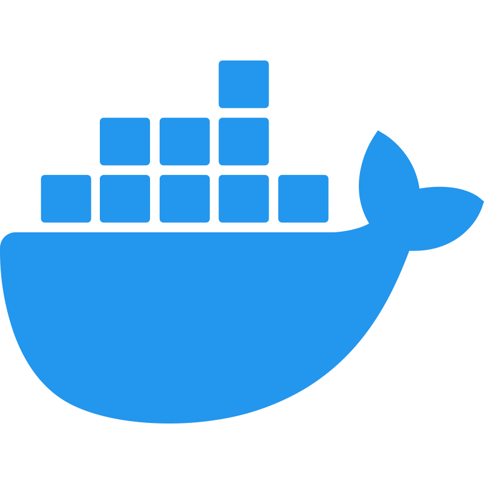
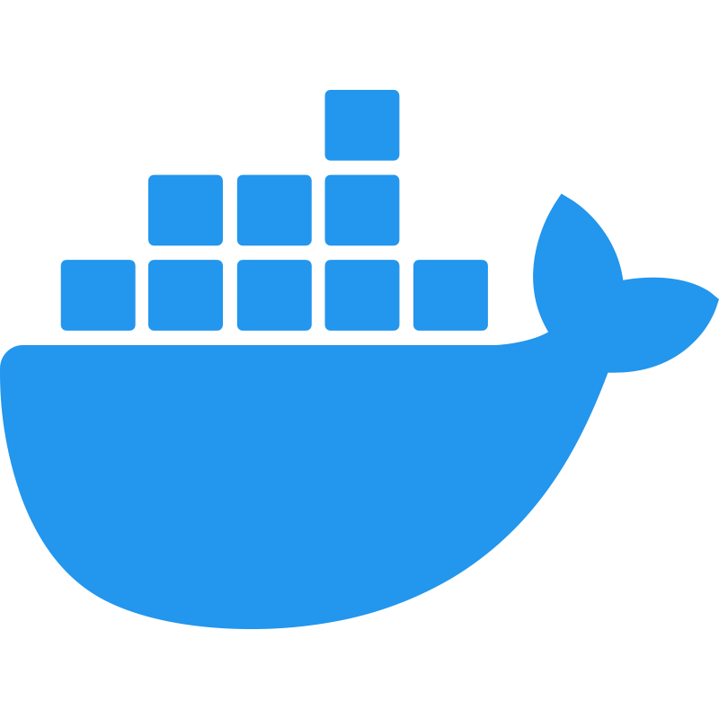

Dean Flanagan - CKA - AWS Associate Architect
Projects
All links go to GitHub repositories
-
Kafka
- Significant experience with Kafka in a tightly regulated banking customer as a high-througput streaming application
- Have worked with both on-platform and off-platform Kafka distributions and managed upgrades from engineering clusters right up to production
- Full Strimzi Kafka Kubernetes cluster for local testing here
- Also have familiarity with Confluent Cloud as a managed option
-
Projects
- Migration and modernization of deployments (Dockerizing applications with best security practices)
- Improvement of availability for applications on Kubernetes platform in particular: using zonal redundancy, tolerations and priorityClasses
- Significantly reduced alert fatigue for clients in non-production environments, one example being a custom version of this PV autoscaler here
-
DevOps
- Used Pulumi on a large IAC project to manage the state of our Kafka clusters and custom resources around them (over and above the Operator)
- Solid experience with Docker, make and compose for accelerated local development for colleagues and their projects: examples here and here
- Managed and deployed AKS clusters using Azure Kubernetes Service and Jenkins
- Used Helm to deploy and manage Kubernetes applications in particular for upgrading Prometheus and Grafana versions
- Strong experience with kustomize and Flux
- Some experience with Terraform and light familiarity with GitHub Actions
Skills
Click to expand each section. All links go to GitHub repositories
-
Fundamentals


- Intermediate Python ability, some JavaScript and SQL skills. Some leetcode here, lots more examples in my repos
- Good working knowledge of basics including DNS, caching, bash scripting, linux, databases, configuration/secret management and more
- Take pride in delivery clean work with documentation, diagrams and agendas: keeping account of work through Jira
- Particularly enjoy working with music packages like music21 and midi integrations
-
Certifications

-
Development/DevOps


- Comfortable using pipelines in Jenkins, AWS CodePipeline and Concourse CI
- Good knowledge of using Terraform, Flux and Helm
- Cognizant of secret and configuration management
-
Containers
 

- Deployed and managed Kubernetes clusters.
- Configured Kubernetes resources for optimal performance.
- Implemented Helm charts for application deployment.
-
Monitoring


- Implemented monitoring solutions using Prometheus and Grafana.
- Set up alerting mechanisms to ensure system reliability for platform (Kubernetes) and application (Kafka)
- Worked with SREs to identify what was important for alerts and what was not
Bio
I'm a backend engineer with a chemistry background who values both technical and soft skills. I started in chemistry, conducting plant trials in over thirty countries. I then moved into sales, where I was reasonably successful but found it wasn’t for me long term; at least not in the industries I was in.
While in sales, I began automating tedious tasks in Excel with Python, which sparked my passion for programming. The shift into tech felt natural, and I discovered the satisfaction of building solutions over selling them.
Plenty of people might have the same skills, but what sets me apart is my sense of humor and ability to work well with people: yes I can deliver and always have that on top of mind... but I actually like people too! A winning combination, no?